Git. Trabajo en grupos: teams¶
1. Introducción al trabajo en equipo¶
Cuando se colabora en el desarrollo de algún proyecto de SW libre o al participar en un grupo de trabajo cerrado se hace un fork del repositorio para poder trabajar con él. Al hacerlo obtenemos una copia de todo el repositorio (con todo su historial) en nuestra cuenta de GitHub.
Antes de seguir con este documento es recomendable consultar este enlace: Difference between Git Clone and Git Fork: https://www.toolsqa.com/git/difference-between-git-clone-and-git-fork/ donde se explica de forma gráfica la diferencia entre hacer un clone y un fork, y el proceso de colaboración a través de Pulls Requests (PR) que se puede resumir en esta figura:
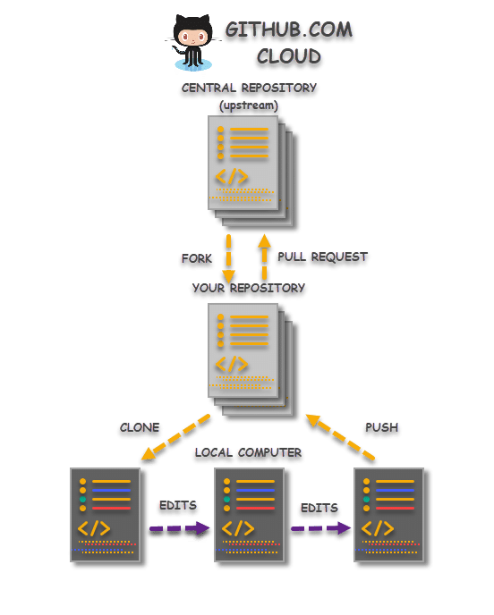
Veremos que el proceso de incorporar cambios al repositorio central o principal es a través de PR desde el directorio forkeado. El trabajo en local se hace tras clonar el repositorio forkeado.
1.1. Primer paso: fork del repositorio¶
Iniciamos el proceso de forma práctica. Para hacer un fork iniciamos sesión en GitHub, buscamos el repositorio principal y hacemos clic en el botón fork de la parte superior de la página. Esto creará una instancia del repositorio completo en nuestra cuenta.
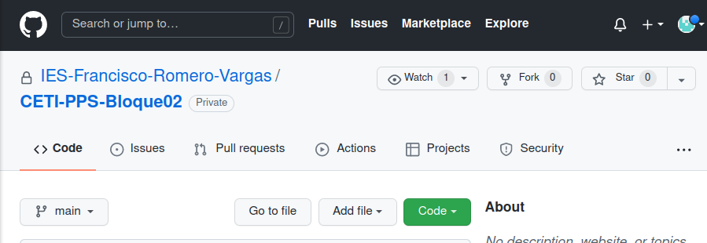
Una vez creado el fork lo podemos ver en nuestra cuenta, con la leyenda forked from
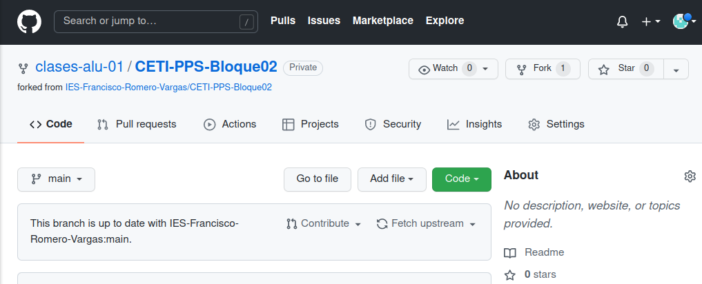
1.2. Segundo paso: clonar el repositorio forkeado¶
Una vez que el repositorio esté en tu cuenta, puede clonarlo a su computador para trabajarlo en local. Ya conocemos esta parte: $ git clone [<dir coderepo>
clases@vm:~/tmp$ git clone https://github.com/clases-alu-01/CETI-PPS-Bloque02.git
Clonando en 'CETI-PPS-Bloque02'...
Username for 'https://github.com': clases.alu+01@gmail.com
Password for 'https://clases.alu+01@gmail.com@github.com':
remote: Enumerating objects: 30, done.
remote: Counting objects: 100% (30/30), done.
remote: Compressing objects: 100% (26/26), done.
remote: Total 30 (delta 3), reused 26 (delta 3), pack-reused 0
Desempaquetando objetos: 100% (30/30), 653.50 KiB | 2.42 MiB/s, listo.
clases@vm:~/tmp$ ls
CETI-PPS-Bloque02
clases@vm:~/tmp$ cd CETI-PPS-Bloque02/
clases@vm:~/tmp/CETI-PPS-Bloque02$ git log --oneline
a492dd0 (HEAD -> main, origin/main, origin/HEAD) update typos
f8cf187 test borrado
bdc2f28 Primera práctica Bloque 02 - Git
ef0ee73 Initial commit
clases@vm:~/tmp/CETI-PPS-Bloque02$
Si lo desea puede modificar la configuración o iniciar la configuración de trabajo en local. Por ejemplo
clases@vm:~/tmp/CETI-PPS-Bloque02$ git config --local user.name "Clases Alu 01"
clases@vm:~/tmp/CETI-PPS-Bloque02$ git config --local user.email "clases.alu+01@gmail.com"
clases@vm:~/tmp/CETI-PPS-Bloque02$ git config --global credential.helper 'cache --timeout 7200'
1.3. Trabajar en local¶
En esta fase se modifica el código, se hacen pruebas, etc. Al final se añade al seguimiento y se hacen commits etc. Lo más correcto sería trabajar sobre una rama creada para ese nuevo código. mejora o corrección de errores:
clases@vm:~/tmp/CETI-PPS-Bloque02$ git branch featureA
clases@vm:~/tmp/CETI-PPS-Bloque02$ git switch featureA
Cambiado a rama 'featureA'
clases@vm:~/tmp/CETI-PPS-Bloque02$ echo "para ejercicio de teams y PR" > test.txt
clases@vm:~/tmp/CETI-PPS-Bloque02$ git add test.txt
clases@vm:~/tmp/CETI-PPS-Bloque02$ git commit -m "añado fichero de test"
[featureA 84f935e] añado fichero de test
1 file changed, 1 insertion(+)
create mode 100644 test.txt
clases@vm:~/tmp/CETI-PPS-Bloque02$ echo "segundo fichero para que haya un par de commits" > leme.txt
clases@vm:~/tmp/CETI-PPS-Bloque02$ git add leme.txt
clases@vm:~/tmp/CETI-PPS-Bloque02$ git commit -m "añado segundo fichero"
[featureA f3fa288] añado segundo fichero
1 file changed, 1 insertion(+)
create mode 100644 leme.txt
clases@vm:~/tmp/CETI-PPS-Bloque02$ git log --oneline
f3fa288 (HEAD -> featureA) añado segundo fichero
84f935e añado fichero de test
a492dd0 (origin/main, origin/HEAD, main) update typos
f8cf187 test borrado
bdc2f28 Primera práctica Bloque 02 - Git
ef0ee73 Initial commit
clases@vm:~/tmp/CETI-PPS-Bloque02$
1.4. Subir los cambios a repo forkeado¶
Cuando ya tengamos el código terminado, podemos incorporarlo a nuestro repositorio "forkeado". Observe que git push especifica el destino origin (el directorio clonado) y la rama a subir, featureA
clases@vm:~/tmp/CETI-PPS-Bloque02$ git push origin featureA
Username for 'https://github.com': clases.alu+01@gmail.com
Password for 'https://clases.alu+01@gmail.com@github.com':
Enumerando objetos: 7, listo.
Contando objetos: 100% (7/7), listo.
Compresión delta usando hasta 8 hilos
Comprimiendo objetos: 100% (4/4), listo.
Escribiendo objetos: 100% (6/6), 653 bytes | 653.00 KiB/s, listo.
Total 6 (delta 1), reusado 0 (delta 0)
remote: Resolving deltas: 100% (1/1), done.
remote:
remote: Create a pull request for 'featureA' on GitHub by visiting:
remote: https://github.com/clases-alu-01/CETI-PPS-Bloque02/pull/new/featureA
remote:
To https://github.com/clases-alu-01/CETI-PPS-Bloque02.git
* [new branch] featureA -> featureA
clases@vm:~/tmp/CETI-PPS-Bloque02$
Si vamos a nuestro repositorio en GitHub se puede observar la rama main
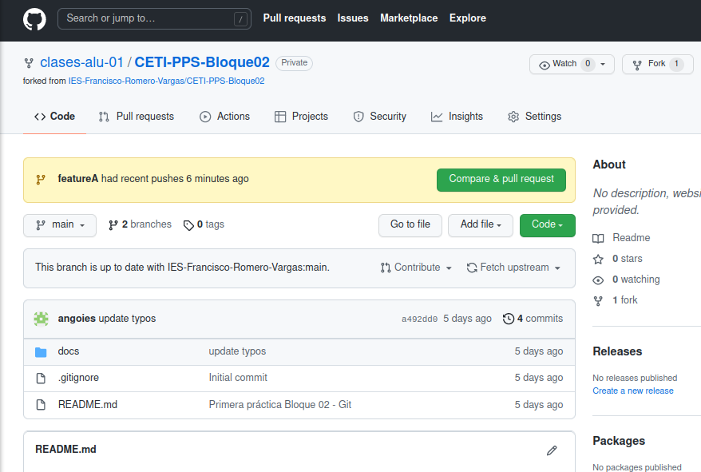
Y la rama featureA con los nuevos ficheros:
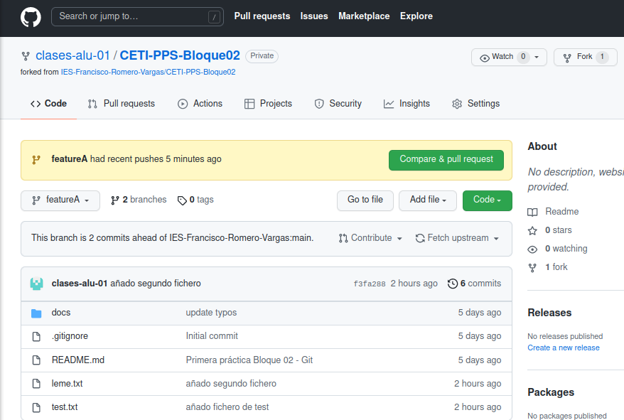
Tengamos en cuenta que esta rama se ha incorporado al repositorio forkeado, no al inicial.
Puede observar al hacer git push que además de subir el código a nuestro repositorio, nos indica como iniciar un Pull Request a través de un enlace:
remote: Create a pull request for 'featureA' on GitHub by visiting:
remote: https://github.com/clases-alu-01/CETI-PPS-Bloque02/pull/new/featureA
1.5. Hacer Pull Request¶
El objetivo es incorporar el código de la rama featureA al repositorio original (que no es nuestro). Para eso se debe hacer un Pull Request (PR), una petición para que los cambios se incorporen al código.
Se puede hacer el PR
- usando directamente el enlace que se ofrece al hacer git push
- o buscando en GitHub en el repositorio forkeado dicha opción:
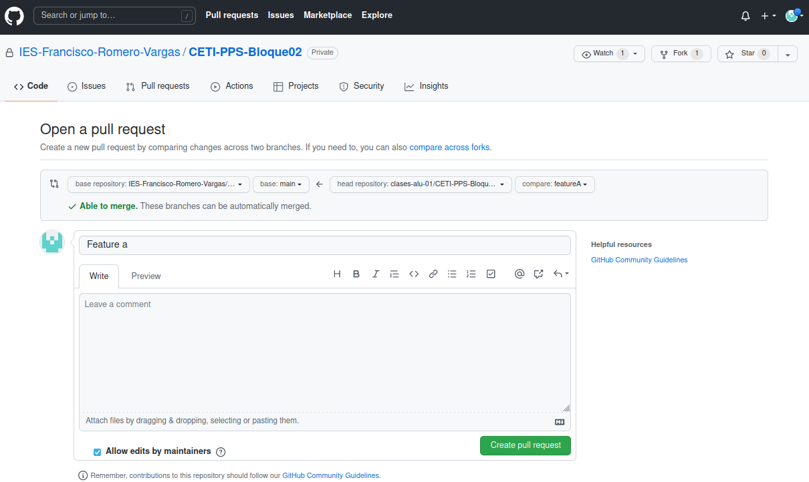
Observe que tiene la opción de añadir información en la PR: nombre de la PR, descripción, etc. Y en la siguiente figura vea que además puede revisar su propia PR ya que se muestran en la misma ventana los commits de la rama featureA y las diferencias entre main y la nueva rama:
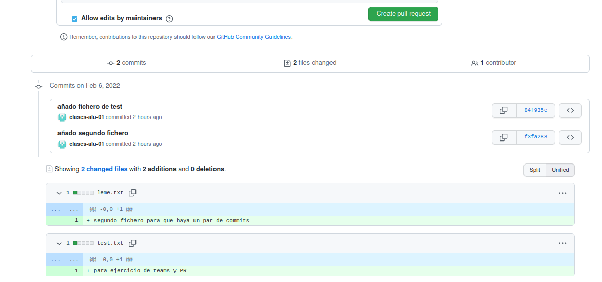
1.6. En el lado de repositorio original¶
Una vez realizada la PR en el directorio forkeado el propietario del repositorio original recibe la petición y puede acceder a ella a través de la pestaña Pull Requests que en este caso aparece con un 1 a su derecha indicando las PR pendientes:
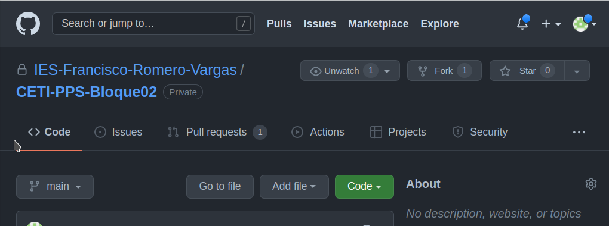
Si accedemos a las PR vemos que hay una pendiente (open):
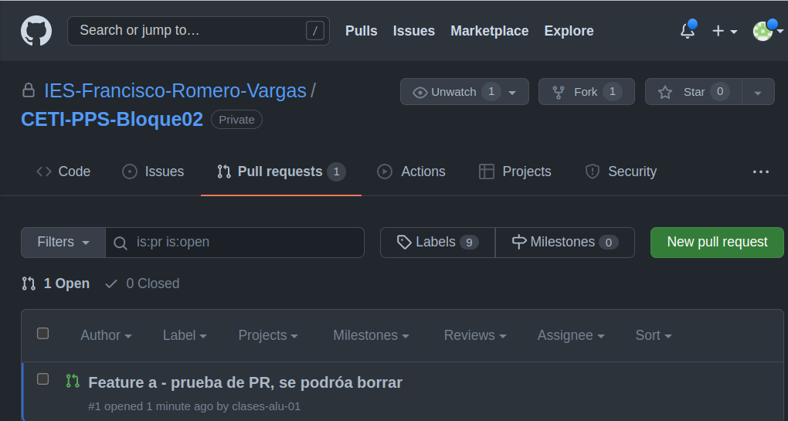
Y si accede a ella podrá ver los commits, el código, etc:
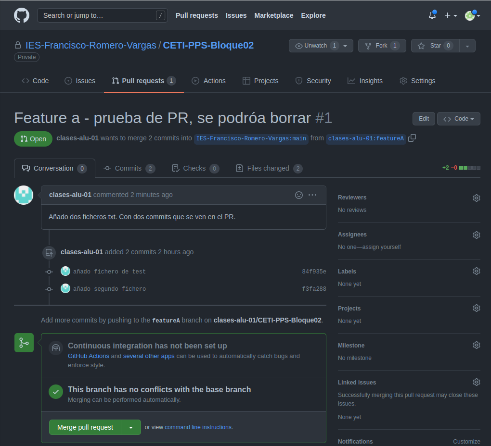
En este caso en vez de aceptar directamente los cambios vamos a realizar un comentario solicitando cambios en el código.
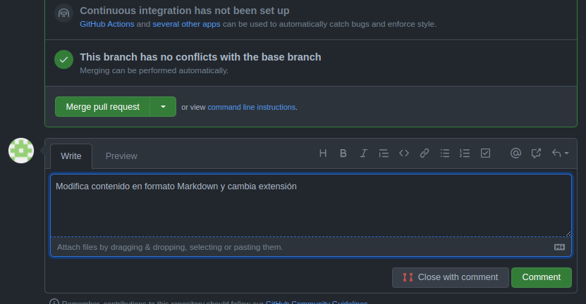
En este caso el usuario clases.alu+01 ve los comentarios a su PR y modifica el código y los nombres de los ficheros (directamente desde el interfaz de GitHub, creando dos nuevos commits a la rama.
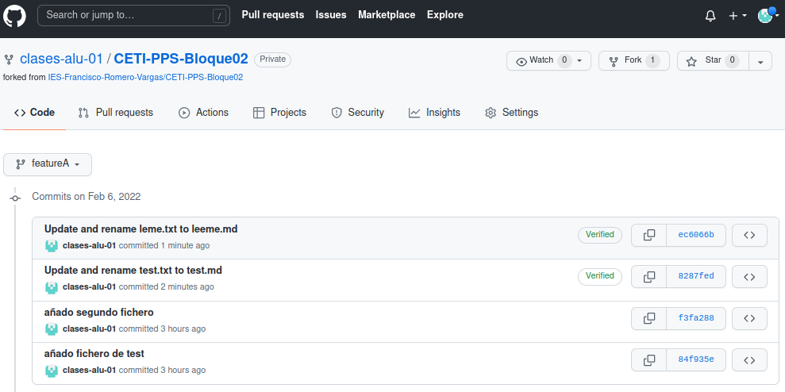
Y vea que en este caso no tiene que hacer una nueva PR puesto que los cambios en la rama featureA son accesibles desde la pestaña de las PR:
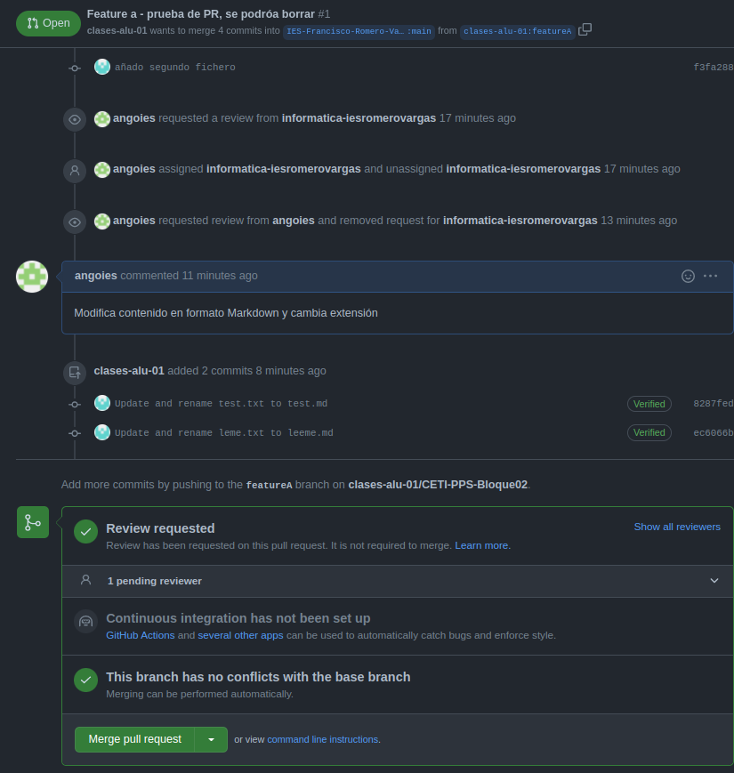
En ese momento si el propietario está de acuerdo puede hacer la fusión con Merge Pull Request. O puede cerrar la petición con un comentario y no aceptar los cambios.
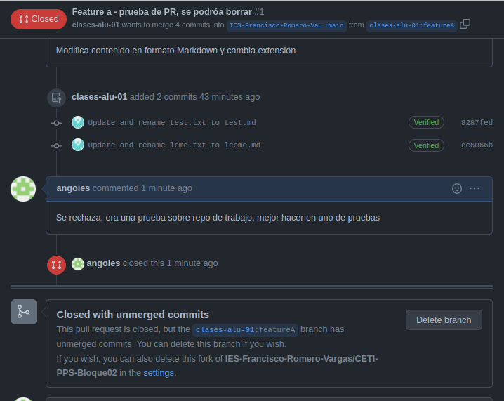
1.7. PR que se acepta¶
Preparamos un escenario donde se crea una nueva rama ejemplos_git_merge
clases@vm:~/tmp/CETI-PPS-Bloque02$ git switch main
Cambiado a rama 'main'
Tu rama está actualizada con 'origin/main'.
clases@vm:~/tmp/CETI-PPS-Bloque02$ git branch ejemplos_git_merge
clases@vm:~/tmp/CETI-PPS-Bloque02$ git switch ejemplos_git_merge
Cambiado a rama 'ejemplos_git_merge'
clases@vm:~/tmp/CETI-PPS-Bloque02$ ls
docs README.md
clases@vm:~/tmp/CETI-PPS-Bloque02$ git log --oneline
a492dd0 (HEAD -> ejemplos_git_merge, origin/main, origin/HEAD, main) update typos
f8cf187 test borrado
bdc2f28 Primera práctica Bloque 02 - Git
ef0ee73 Initial commit
clases@vm:~/tmp/CETI-PPS-Bloque02$
y se incorporan tres ficheros a dicha rama: un fichero Markdown y un par de figuras:
clases@vm:~/tmp/CETI-PPS-Bloque02$ code docs/01_git_intro_test.merge.md
clases@vm:~/tmp/CETI-PPS-Bloque02$ git status
En la rama ejemplos_git_merge
Archivos sin seguimiento:
(usa "git add <archivo>..." para incluirlo a lo que se será confirmado)
docs/01_git_intro_test.merge.md
docs/figuras/git-merge-conflicto.png
docs/figuras/git-merge-recursive.png
no hay nada agregado al commit pero hay archivos sin seguimiento presentes (usa "git add" para hacerles seguimiento)
clases@vm:~/tmp/CETI-PPS-Bloque02$ git add .
clases@vm:~/tmp/CETI-PPS-Bloque02$ git status
En la rama ejemplos_git_merge
Cambios a ser confirmados:
(usa "git restore --staged <archivo>..." para sacar del área de stage)
nuevo archivo: docs/01_git_intro_test.merge.md
nuevo archivo: docs/figuras/git-merge-conflicto.png
nuevo archivo: docs/figuras/git-merge-recursive.png
clases@vm:~/tmp/CETI-PPS-Bloque02$ git commit -m "Ejemplos de casos git merge"
[ejemplos_git_merge fb2f3d8] Ejemplos de casos git merge
3 files changed, 334 insertions(+)
create mode 100644 docs/01_git_intro_test.merge.md
create mode 100644 docs/figuras/git-merge-conflicto.png
create mode 100644 docs/figuras/git-merge-recursive.png
clases@vm:~/tmp/CETI-PPS-Bloque02$
Ahora hacemos push al repositorio forkeado:
clases@vm:~/tmp/CETI-PPS-Bloque02$ git push origin ejemplos_git_merge
Username for 'https://github.com': clases.alu+01@gmail.com
Password for 'https://clases.alu+01@gmail.com@github.com':
Enumerando objetos: 10, listo.
Contando objetos: 100% (10/10), listo.
Compresión delta usando hasta 8 hilos
Comprimiendo objetos: 100% (7/7), listo.
Escribiendo objetos: 100% (7/7), 222.22 KiB | 13.89 MiB/s, listo.
Total 7 (delta 2), reusado 0 (delta 0)
remote: Resolving deltas: 100% (2/2), completed with 2 local objects.
remote:
remote: Create a pull request for 'ejemplos_git_merge' on GitHub by visiting:
remote: https://github.com/clases-alu-01/CETI-PPS-Bloque02/pull/new/ejemplos_git_merge
remote:
To https://github.com/clases-alu-01/CETI-PPS-Bloque02.git
* [new branch] ejemplos_git_merge -> ejemplos_git_merge
clases@vm:~/tmp/CETI-PPS-Bloque02$
Ahora nos queda hacer el PR (tenemos el enlace en la salida del comando git push) y que el propietario lo acepte. De hecho sin usar el enlace al acceder a GitHub nos ofrece hacer el PR:
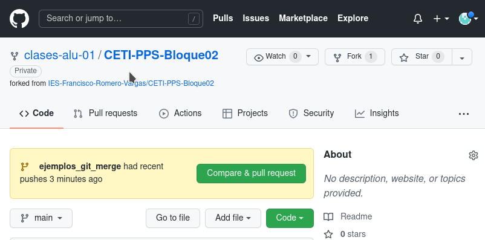
Accedemos a la ventana de creación de PR:
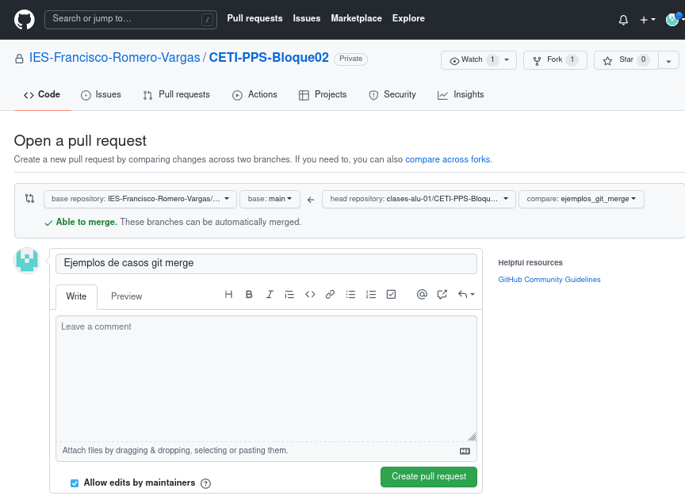
Y tras crearla vemos como queda:
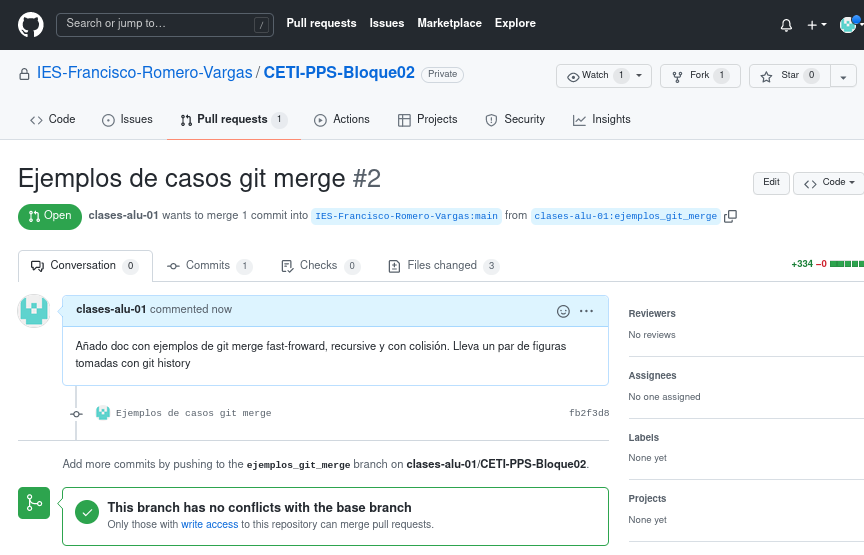
Ahora vemos de nuevo como el propietario del repositorio vería el PR abierto:
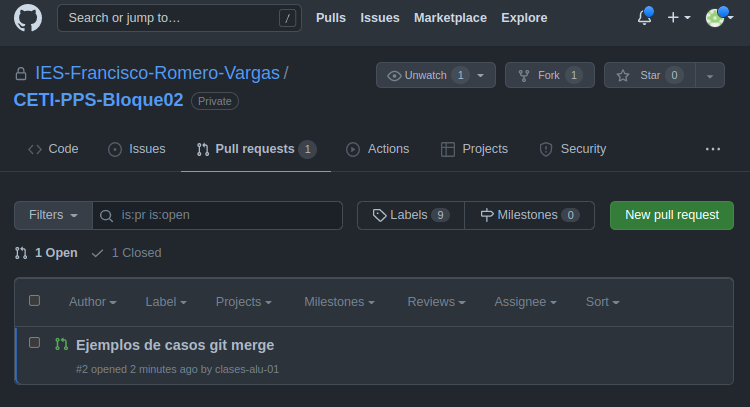
Lo abrimos si queremos ver los detalles. Y en este caso lo aceptamos haciendo Merge Pull Request
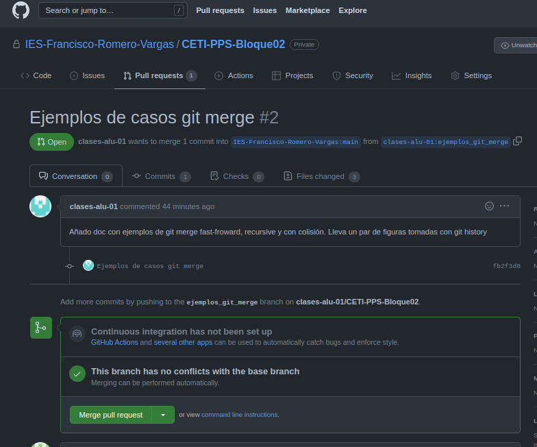
Ahora el PR está aceptado y cerrado, y los ficheros se han incorporado a la rama main del repositorio inicial.
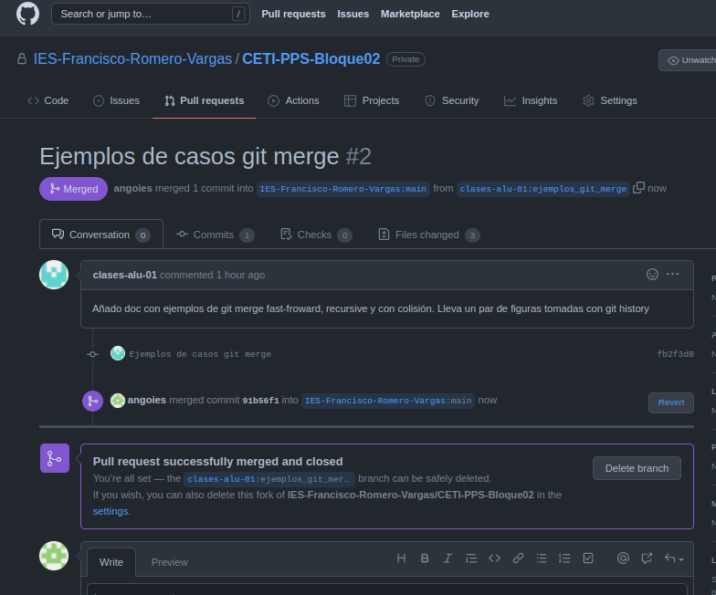
Puede apreciar dos commits nuevos en main: el original de la rama fusionada y uno más de la fusión realizada:
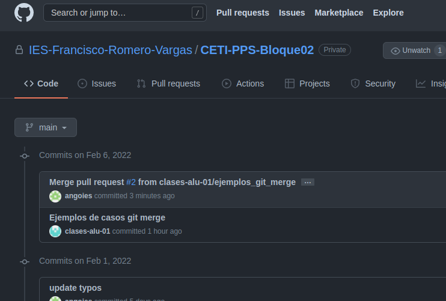
Y confirmamos que el fichero se ha incorporado a main:
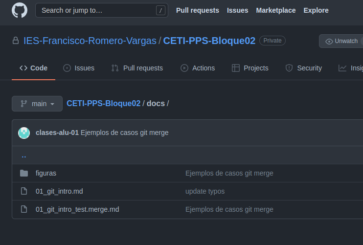
2. Actualizar repositorios clone y forked (upstream del original)¶
Ahora tenemos algo que considerar: el repositorio principal está actualizado, pero el repositorio forkeado y/o el clonado no. Además es posible que haya incorporaciones de código de otras personas que no tengamos tampoco.
Los pasos a dar para conseguir que los repositorios clonados y forkeado estén actualizados serían:
- Agregar en local el repositorio Git original como un repositorio upstream. Eso nos permite extraer los cambios desde el repositorio original a la versión local (
git remote add upstream <repo_original>). - Descargar el repositorio original (
git fetch upstream). Las confirmaciones (commits) del repositorio original serán almacenadas en una rama local llamadaupstream/main. - Fusionar los cambios de la rama
upstream/maina tu rama maestra local (git merge upstream/main). Esto hará que tu ramamainse sincronice con el repositorioupstreamsin perder tus cambios locales. - Envíar (
git push origin main) los cambios al repositorio forkeado. Esto actualiza los cambios en el repositorio forkeado, y si es necesario genera la posibilidad de una PR.
Paso 1: observe los remotos originales (creados al hacer git clone) y los que se añaden como upstream
clases@vm:~/tmp/CETI-PPS-Bloque02$ git remote -v
origin https://github.com/clases-alu-01/CETI-PPS-Bloque02.git (fetch)
origin https://github.com/clases-alu-01/CETI-PPS-Bloque02.git (push)
### 1.
clases@vm:~/tmp/CETI-PPS-Bloque02$ git remote add upstream https://github.com/IES-Francisco-Romero-Vargas/CETI-PPS-Bloque02.git
clases@vm:~/tmp/CETI-PPS-Bloque02$ git remote -v
origin https://github.com/clases-alu-01/CETI-PPS-Bloque02.git (fetch)
origin https://github.com/clases-alu-01/CETI-PPS-Bloque02.git (push)
upstream https://github.com/IES-Francisco-Romero-Vargas/CETI-PPS-Bloque02.git (fetch)
upstream https://github.com/IES-Francisco-Romero-Vargas/CETI-PPS-Bloque02.git (push)
clases@vm:~/tmp/CETI-PPS-Bloque02$
Paso 2: Descargamos del repositorio original (git fetch upstream):
clases@vm:~/tmp/CETI-PPS-Bloque02$ git fetch upstream
Username for 'https://github.com': clases.alu+01@gmail.com
Password for 'https://clases.alu+01@gmail.com@github.com':
remote: Enumerating objects: 1, done.
remote: Counting objects: 100% (1/1), done.
remote: Total 1 (delta 0), reused 0 (delta 0), pack-reused 0
Desempaquetando objetos: 100% (1/1), 669 bytes | 669.00 KiB/s, listo.
Desde https://github.com/IES-Francisco-Romero-Vargas/CETI-PPS-Bloque02
* [nueva rama] main -> upstream/main
clases@vm:~/tmp/CETI-PPS-Bloque02$
Se ha creado una rama upstream/main que podemos fusionar con nuestro main local
Paso 3: desde la rama main local hacemos un merge con la rama descargada
clases@vm:~/tmp/CETI-PPS-Bloque02$ git switch main
Ya en 'main'
Tu rama está actualizada con 'origin/main'.
clases@vm:~/tmp/CETI-PPS-Bloque02$ git merge upstream/main
Actualizando a492dd0..91b56f1
Fast-forward
docs/01_git_intro_test.merge.md | 334 ++++++++++++++++++++++++++++++++++++++++++++++++++++++++++++++++++++++++++++++++++++++
docs/figuras/git-merge-conflicto.png | Bin 0 -> 118405 bytes
docs/figuras/git-merge-recursive.png | Bin 0 -> 120730 bytes
3 files changed, 334 insertions(+)
create mode 100644 docs/01_git_intro_test.merge.md
create mode 100644 docs/figuras/git-merge-conflicto.png
create mode 100644 docs/figuras/git-merge-recursive.png
clases@vm:~/tmp/CETI-PPS-Bloque02$
Podemos comprobar como nuestro repositorio local está ahora adelantado respecto a origin/main (el repositorio forkeado)
clases@vm:~/tmp/CETI-PPS-Bloque02$ git status
En la rama main
Tu rama está adelantada a 'origin/main' por 2 commits.
(usa "git push" para publicar tus commits locales)
nada para hacer commit, el árbol de trabajo está limpio
clases@vm:~/tmp/CETI-PPS-Bloque02$
Y ahora damos el último paso, actualizar origin, el repositorio forkeado
Paso 4:
clases@vm:~/tmp/CETI-PPS-Bloque02$ git push origin main
Total 0 (delta 0), reusado 0 (delta 0)
To https://github.com/clases-alu-01/CETI-PPS-Bloque02.git
a492dd0..91b56f1 main -> main
clases@vm:~/tmp/CETI-PPS-Bloque02$ git status
En la rama main
Tu rama está actualizada con 'origin/main'.
nada para hacer commit, el árbol de trabajo está limpio
clases@vm:~/tmp/CETI-PPS-Bloque02$
Nota: es muy recomendable actualizar el repositorio local antes de hacer un PR ya que es más sencillo solucionar los posibles conflictos en local antes de incorporarlos a GitHub. Esta gráfica le puede servir de referencia: antes de hacer push y pull request actualizamos el repositorio en local a través de upstream.
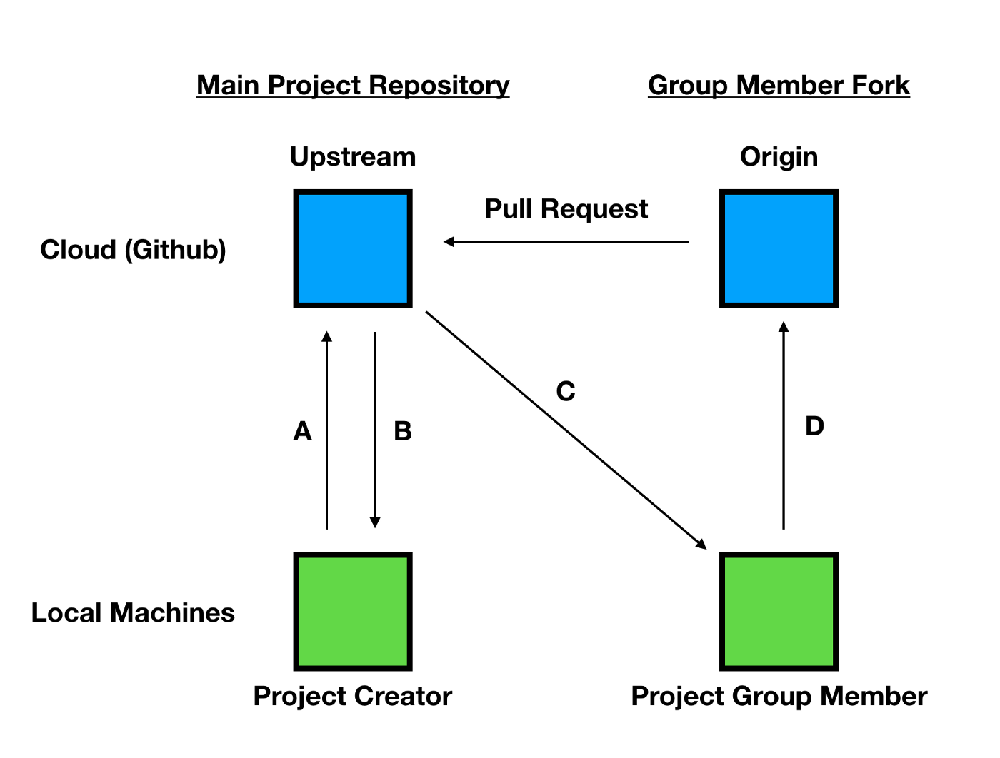
3. Git Flow¶
Hemos visto un ejemplo sencillo de cómo funciona el trabajo en equipo y las PR. Cuando la aplicación y el equipo crece es fundamental definir un flujo de trabajo.
Eso es lo que pretende git flow: sistematizar el uso (y nombres) de las ramas, cómo incorporar nuevas características, resolver fallos ,etc.
En este primer enlace https://www.programoergosum.es/tutoriales/flujo-de-trabajo-en-git-con-gitflow/ se muestra una gráfica que resume todo el funcionamiento de git flow:
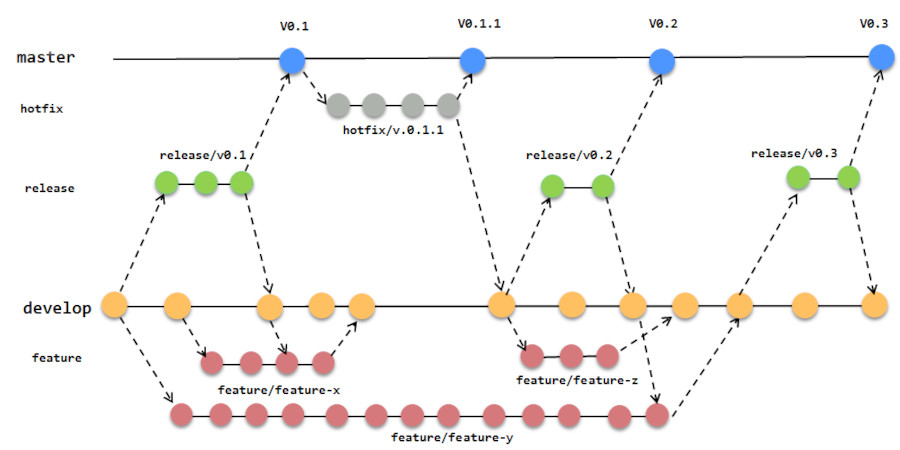
El modelo de GitFlow cuenta con dos ramas principales, master y develop, y varias de soporte para estas que podrán ser ramas de feature, release y hotfix.
- La rama master es la que contiene la última versión de nuestro proyecto y usaremos para desplegar en producción.
- La rama develop es la que contiene el último estado del desarrollo del mismo, es decir, hasta el último commit que hayamos hecho.
- Las ramas de feature se usarán para desarrollar nuevas funcionalidades, se crearán a partir de la rama develop y al terminar se fusiona con develop.
- Las ramas release se usarán para lanzar una nueva versión de nuestro proyecto y se fusionaran tanto con master como con develop.
- Las ramas hotfix se usarán para cambios rápidos sobre la rama master y se fusionan con master y develop.
Para seguir este modelo de trabajo se puede instalar el paquete git flow con el comando
apt install git-flow y este paquete nos facilita comandos específicos que comienzan con git flow y simplifican el trabajo de crear ramas, fusionarlas, etc.
En este segundo enlace https://www.atlassian.com/es/git/tutorials/comparing-workflows/gitflow-workflow se explica el uso de cada rama y el uso de los comandos git flow y sus comandos git equivalentes. Por ejemplo:
Al igual que al finalizar una rama release, una rama hotfix se fusiona tanto en main como en develop. con git tenemos que ejecutar
git checkout main git merge hotfix_branch git checkout develop git merge hotfix_branch git branch -D hotfix_branchCon git flow sería equivalente a
git flow hotfix finish hotfix_branch
Si quiere profundizar más tiene un Curso en Openwebminar sobre git flow: https://openwebinars.net/academia/aprende/gitflow/
4. Buenas prácticas¶
Cada empresa tiene su método de trabajo, etc. Pero hay una serie de recomendaciones generales que se pueden aplicar siempre
4.1. Buenas prácticas en los commits¶
En este artículo "Cómo escribir un buen mensaje de commit en Git" https://geekytheory.com/como-escribir-buen-mensaje-commit-git/ tiene ejemplos. En particular hace referencia a la guía de estilo que se aplica en el desarrollo de angular, Git Commit Guidelines https://github.com/angular/angular.js/blob/master/DEVELOPERS.md#commits
4.2. Buenas prácticas en los PR¶
Algo similar nos encontramos con los PR en este artículo: Buenas prácticas para crear una Pull Request https://geekytheory.com/como-crear-pull-request-buenas-practicas/
- Revisa tu propia Pull Request
- Comenta tu propia Pull Request
- Haz Pull Requests pequeñas
- etc..
5. TODO REVISAr Ejercicios¶
5.1. Ejercicio 01: Hacer proceso Pull Reqeust¶
Pasos:
- Hacer fork del repositorio
CETI-PPS-aficionesen GitHub. - Clonar en local
- Cambiar a rama
develop - Crear nueva rama (
feature-<user>) y trabajar en ella - Incluir un fichero en formato Markdown en el directorio
docscon una breve reseña de su serie, libro o programa preferido y hacer commit del mismo. - Modificar el fichero
indice.mden la raíz y añada una línea con su nombre, su serie, libro o programa preferido, y un enlace al nombre del fichero creado previamente en el directoriodocs. El formato de un enlace en MarkDown es[Texto del enlace](ruta_al_documento). Vuelva a hacer commit para añadir este fichero al repositorio. - Hacer
git pushal repositorio forkeado de la rama creada:git push origin feature-<user> - Observe que en el propio mensaje de push indica la posibilidad de hacer PR (y muestra un enlace para hacerlo)
- Hacer el Pull Request desde el enlace (o desde el repositorio forkeado). Tenga en cuenta que debe hacer el PR a la rama
developdel repositorio principal. - Esperar que se acepte su PR (o se le propongan modificaciones)
Esperar a que se acepten varios PR de otros miembros del equipo en el repositorio original. En ese momento el repositorio clonado y el forkeado no coinciden con original.
- Configurar un remote upstream y hacer fetch & merge del repositorio principal en su repositorio clonado y luego update del forkeado.
5.2. Ejercicio 02: Procesar Pull request¶
- Crear un repositorio en GitHub
- Añadir algunos fichero y commits.
- Crear rama
develop. - Que un compañero intente añadir un documento y modificar un fichero existente sobre su repositorio y haga un PR
- Aceptar el PR sobre la rama develop o sugerir cambios antes de aceptar el PR.
6. Enlaces¶
- Artículos tipo Paso a paso
- Cómo hacer tu primer PR, muy clarito: https://www.freecodecamp.org/espanol/news/como-hacer-tu-primer-pull-request-en-github/
- Añade sobre el anterior la configuración de remote y su uso tras la aceptación del PR final actualizar el repositorio local clonado: https://blog.desdelinux.net/tutorial-simple-primer-pr-pull-request/
-
Ejemplo paso a paso de dos usuarios trabajando a través de PR. Añade el uso de "issues" y asignaciones. Potions online: https://dev.to/colocodes/learn-how-to-use-git-and-github-in-a-team-like-a-pro-2dk7
-
Explicación del proceso fork/clone/push/PR: https://www.toolsqa.com/git/difference-between-git-clone-and-git-fork
- Buena explicación gráfica de clone/fork/upstream: https://medium.com/@androidmatheny/using-git-and-github-on-group-projects-d636be2cdd4d
-
Diferencia entre fork y clone: https://www.toolsqa.com/git/difference-between-git-clone-and-git-fork/
-
Git flow:
- Gráfica resumen y comandos
git flow: https://www.programoergosum.es/tutoriales/flujo-de-trabajo-en-git-con-gitflow/ - Git flow: explica uso cada rama y comandos git flow y comandos git equivalentes: https://www.atlassian.com/es/git/tutorials/comparing-workflows/gitflow-workflow
-
Curso Openwebminar git flow (1h:15m) : https://openwebinars.net/academia/aprende/gitflow/
-
Buenas prácticas
- en PR: https://geekytheory.com/como-crear-pull-request-buenas-practicas/
- en commits: https://geekytheory.com/como-escribir-buen-mensaje-commit-git/
- en GitHub Issues: https://www.backhub.co/blog/best-practices-for-using-github-issues